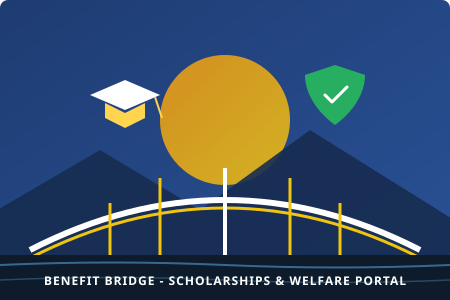
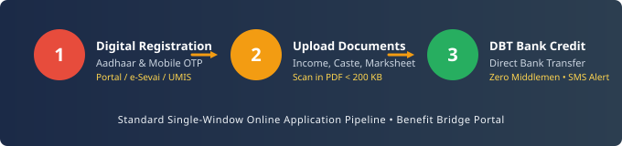

Benefit Bridge: Empowering Every Citizen Across Life Stages

Welcome to Benefit Bridge, the premier national guidance portal designed to help students, youth, working professionals, and senior citizens identify the exact government scholarships and welfare schemes available for their age bracket.
Navigating hundreds of state and central government portals can be overwhelming. Too many eligible citizens miss out on thousands of rupees in financial aid, education allowances, skill stipends, and medical coverage simply because they do not know what schemes exist for their current age and life stage. Benefit Bridge organizes all public support into transparent, easily searchable age tiers.
How Benefit Bridge Unlocks Your Entitlements
Whether you are a 7-year-old primary student seeking uniforms and book grants, a 19-year-old college student in need of merit scholarships, a 28-year-old artisan looking for subsidized business loans, or a 65-year-old senior applying for monthly pension benefits, our unified system provides immediate clarity.
- Age-Tailored Discovery: Match schemes precisely by date of birth, education qualification, gender, and family income bracket.
- Direct Benefit Transfer (DBT) Ready: Learn how scholarship funds and pension stipends are deposited directly into your bank account with zero middlemen.
- Step-by-Step Documentation: Clear checklists for Aadhaar linking, bonafide student certificates, caste/community proof, and domicile papers.
- No Deadline Surprises: Active tracking for application opening dates, verification rounds, and merit list announcements.
Begin Your Application Journey
Choose from our dedicated portals below to view comprehensive breakdowns, eligibility guidelines, and application forms tailored to your exact profile.

Frequently Asked Questions
What is the objective of this scheme? ˇ
The scheme offers loans to farmers covering up to 90% of the cost of a power tiller, with an interest rate between 11% and 12.25%.
Who is eligible for this scheme? ˇ
Individual farmers, joint liability groups, small and marginal farmers, and women agricultural entrepreneurs possessing cultivable landholding in Tamil Nadu and across verified state registries are eligible.
What is the purpose of this loan? ˇ
The purpose of this loan and capital subsidy is to encourage agricultural mechanization, reduce farm labor dependency, and enhance timely tilling and sowing operations across agricultural lands.
What percentage of the power tiller’s cost is covered by the loan? ˇ
Up to 90% of the total on-road price of the power tiller equipment is covered under bank loan assistance, with the remaining 10% paid as farmer margin contribution.
What documents are needed to apply online? ˇ
To successfully apply online for Tamil Nadu and national schemes, ensure you have scanned copies of the following documents:
- Identity Proof: Aadhaar Card / Voter ID / Student Smart Card.
- Residence & Domicile: Smart Ration Card (Family Card) or Nativity Certificate.
- Income Certificate: Revenue Department issued annual income certificate (< Rs. 2.5 Lakhs/year).
- Land / Academic Records: Chitta / Patta passbook for farmers, or EMIS Number / Bonafide certificate for students.
- Bank Details: Bank passbook front page showing Account Number and IFSC (must be Aadhaar-seeded for DBT).
How to apply online step-by-step? ˇ
Follow these 5 steps to submit your application on the official state and central portals:
- Step 1 - Citizen Registration: Visit the portal (TN e-Scholarship, NSP, or myScheme) and click New Registration using your Aadhaar number.
- Step 2 - Verify via OTP: Complete Aadhaar authentication using the OTP sent to your registered mobile number.
- Step 3 - Fill Application Form: Choose your age bracket and applicable scheme, enter personal details, educational/agricultural background, and bank details.
- Step 4 - Upload Scanned Documents: Upload PDF scans of your income, caste, marksheets, or land records (each under 200 KB).
- Step 5 - Submit & Track: Submit the application, download your acknowledgment slip with Application ID, and monitor approval status via SMS.